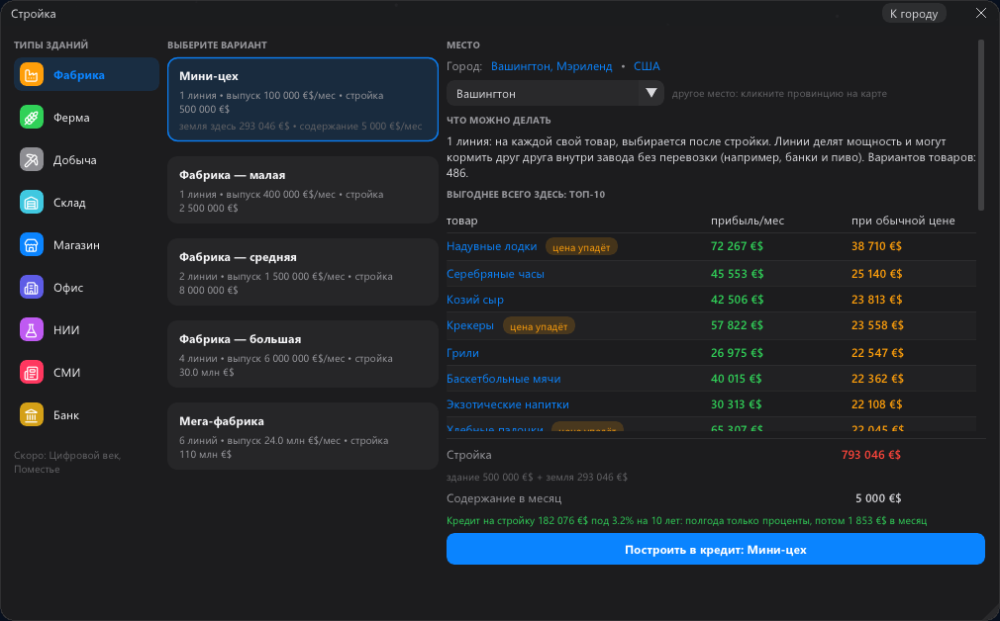
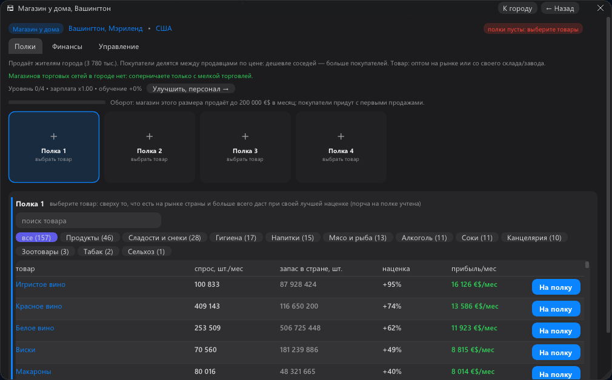
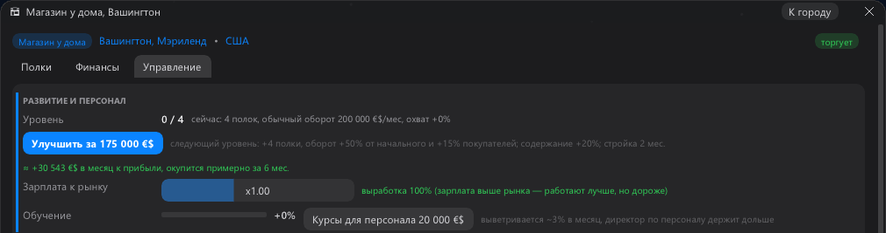

В 0.13 новичок переживал первые 15 минут. Дальше он застревал: целый год с одним магазином, потому что самый
дешёвый завод стоил в пять раз дороже, а между ними не было ничего. В 0.14 у этой дороги появились ступеньки.

Магазин → мини-цех → фабрика
✚ Мини-цех. Новая ступень между магазином и малой фабрикой: одна линия, четверть фабрики, а стоит
с землёй примерно как магазин.
✚ Кредит на стройку. Когда ваши здания полгода в плюсе, банк даст до 75% цены завода, фермы или шахты
под залог самого здания: на 10 лет, первые полгода только проценты. В окне стройки — кнопка «Построить в кредит».
✚ Обучение и советник ведут по лестнице магазин → мини-цех → фабрика и говорят, когда банк готов дать денег.
✚ Долг под присмотром. Кредит на стройку оставляет запас до лимита банка, а советник предупреждает,
когда долг подходит к лимиту.
✚ «Нет сырья». Товары, сырьё для которых в стране не продаётся, в списке нового завода помечены красным
и стоят внизу.
Магазин
✚ Своя наценка у каждого товара. Список «На полку» считает для каждого товара наценку, при которой полка
приносит больше всего: сколько покупателей города берут этот товар и насколько им важна цена. Кнопка «На полку»
ставит её сама, прибыль в списке — уже после налога.
✚ Сколько даст улучшение. Под кнопкой «Улучшить» видно «+N в месяц, окупится за M мес.» — в карточке
здания и в конце первой главы.
✚ Честная зарплата управляющего. Ему платят по настоящему размеру здания: в магазине у дома около
16 тысяч в месяц, а не 31 тысячу из 45 тысяч прибыли.


Сохранения 0.13 грузятся в 0.14.
И вопрос к вам. Какая фраза больше похожа на игру, в которую хочется сыграть? А: «Экономическая стратегия на реальной карте Земли». Б: «Начни с ларька в 2000-м. Переживи доткомы, 2008-й и своих родственников. Купи страну».
Напишите в комментариях одну букву.